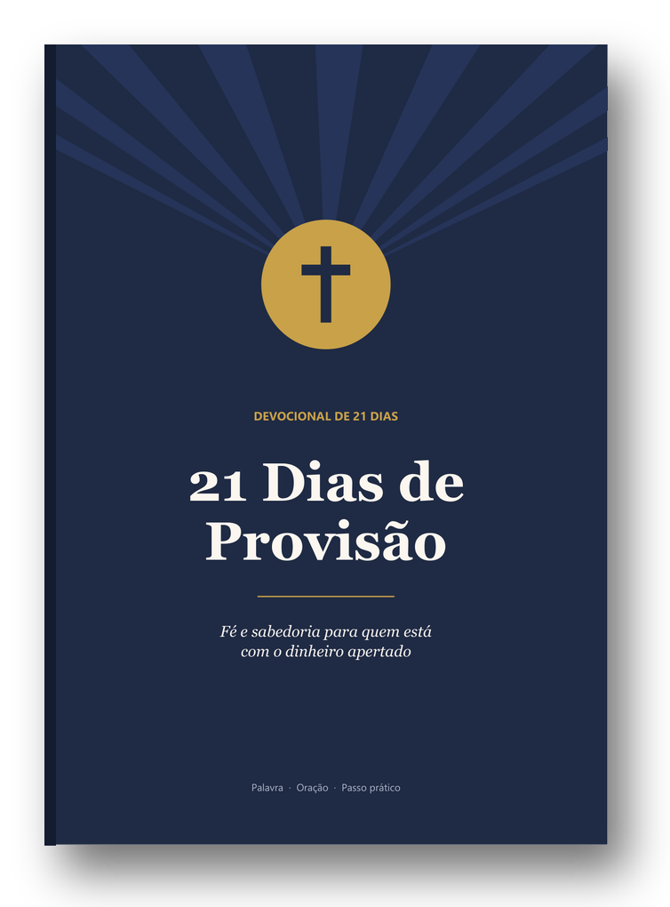
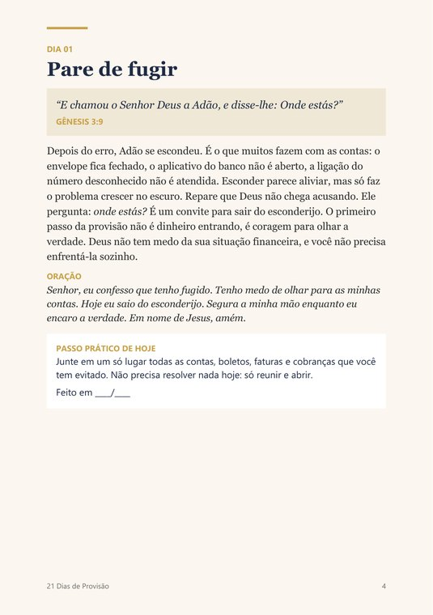
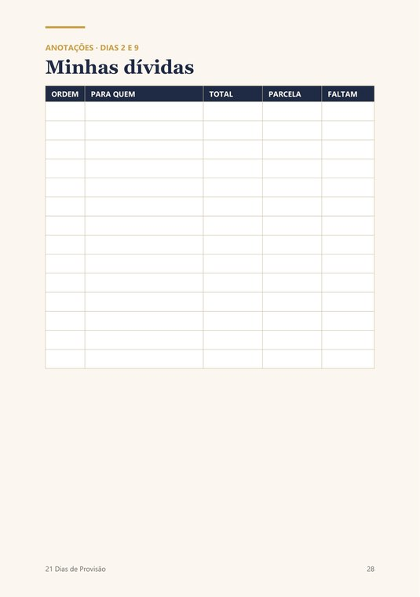
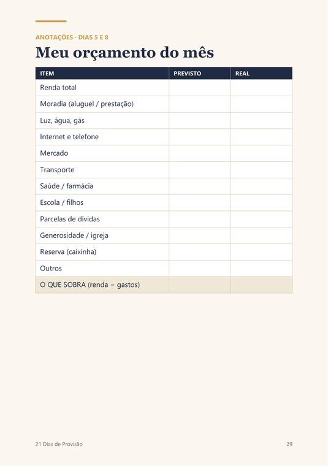

Em 21 Dias de Provisão, cada dia traz um versículo, uma reflexão curta, uma oração e um passo prático para organizar a vida financeira à luz da Palavra. Uns 10 minutos por dia.
Quero começar amanhãPDF · R$ 12,90 · acesso imediato por e-mail · 7 dias de garantia
“Não estejais inquietos por coisa alguma; antes, as vossas petições sejam em tudo conhecidas diante de Deus.”FILIPENSES 4:6

Boleto chegando, conta que não fecha, aquela vontade de não abrir o aplicativo do banco. Muita gente cristã passa por isso em silêncio, com vergonha de falar até na igreja.
Este devocional foi feito para esse momento. Ele não fica só na oração e também não vira planilha fria. Ele junta as duas coisas:
O texto bíblico do dia
Curta, direta, para a vida real
Para orar junto ou inspirar a sua
Uma tarefa simples para fazer hoje
Sair do medo e olhar para a situação com os olhos da fé.
Colocar ordem nas contas com a sabedoria da Palavra.
Trabalhar, multiplicar e caminhar com esperança.



Não é “oração para prosperar” nem fórmula de enriquecimento. É um caminho de 21 dias para trocar o medo por direção: olhar para as contas com coragem, organizar o que dá para organizar e confiar em Deus no que não depende de você. O resultado vem da sua caminhada, e cada pessoa tem a sua.
Garantia de 7 dias: se não for para você, devolvemos 100%.
Leia os primeiros dias e veja se é para você. Se não gostar, por qualquer motivo, peça o reembolso em até 7 dias pela própria plataforma de pagamento e devolvemos 100% do valor.
Não. É um PDF. Você lê no celular, no tablet ou no computador, e pode imprimir as folhas de preencher se preferir.
Logo depois da confirmação do pagamento você recebe o acesso por e-mail. No Pix, costuma ser na hora.
De nenhuma em especial. É cristão, sem denominação, baseado só na Bíblia.
Não. Os passos práticos são simples: anotar, somar, conversar, decidir. As folhas de preencher já vêm prontas.
Uns 10 minutos. O ideal é fazer de manhã, com uma caneta por perto.
Você tem 7 dias de garantia. Pede o reembolso pela plataforma e recebe 100% de volta.